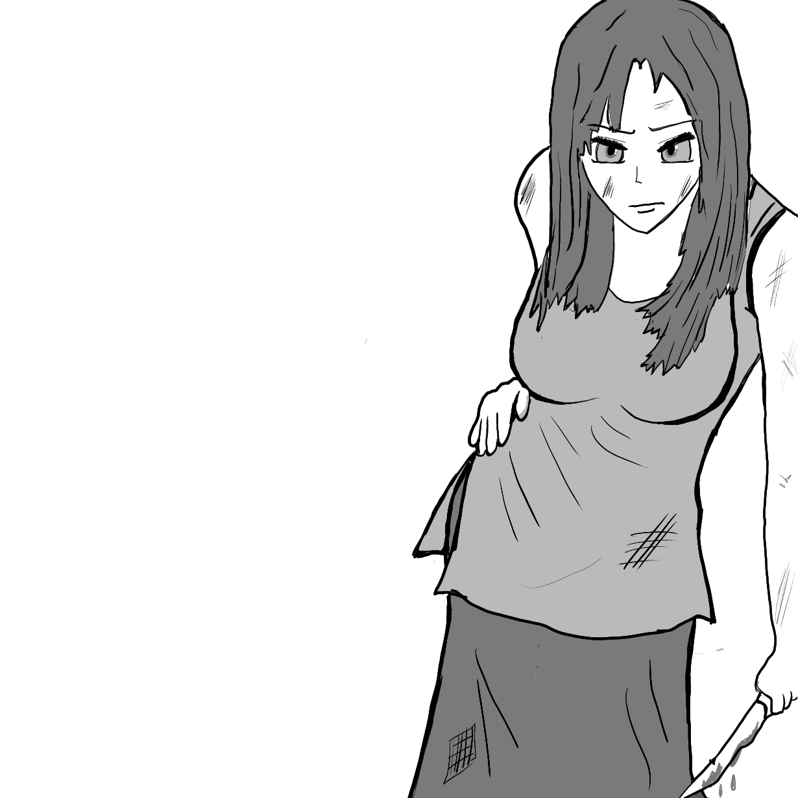

Zap, and the final soldier guarding Travore’s room had also been sent to his heavenly abode. Felisin had put to death all the soldiers standing in her path to Travore’s room, courtesy of the magic the priest had taught her. Now her revenge would be pure, just Felisin and Travore, her sister.
With a loud thud, Felisin opened the door to the hall where her sister was reportedly present. And Travore was there. Twenty paces ahead of her. The hall was brightly lit, with fire sticks on the wall every five paces. At the end of the hall was standing Travore wielding a two-handed sword. A bunch of bodies lay throughout the hall, most of them being prince’s soldiers. The bodies were spread at seemingly random places, as if Travore was moving and fighting throughout the hall. But strangely, there was no blood on her sword.
“And so we meet again sister.” Travore said, her dark eyes glaring shatteringly at Felisin’s.
“And this shall be our final meeting, hopefully.” Felisin said.
“That it shall. And you shall be so ruthlessly destroyed that your body will be far from identification. And then I shall rest peacefully.”
“Tell me sister, why do you hate me so much?”
“You ask this of me, Felisin? Don’t you already know the answer. You made my life a living hell. I was younger than you. And you made full use of that fact to steal all happiness from my life. You were already a master in multiple fields, be it fighting, studies or any field in which I was even remotely interested in. I being young could not be at your level so early. Yet everyone compared me to you. My friends used me to get access to you. Sometimes I felt that they were my friends only because I was your sister. Even father and mother told me to be more like you and preferred you over me. You were always their favourite daughter. Be it any gathering or festival, people always talked about you first, and then they mentioned me to be following your footsteps. I was always the second, never the first. Always the shadow, never the body. And all because of you. I shall kill you now sister, and finish my revenge for all the wounds you have afflicted me with.”
“Your idiocy knows no bounds, Travore. Taking revenge on someone for being better than you? Is that how low you can get? Pettiness enough that even Satan shall shy away from you. When I send you to Yamraj, sister, the world shall cry in happiness.”
Suddenly the door from which she had entered the room snapped shut.
“To kill me, you should have to reach me first. Felisin. This hall has magical spells. As you can see, this hall is scattered with bodies and yet my blade is clean. None has been ever able to solve this maze sister. And now that there’s no escape from this room, should you not be able to reach me within 20 minutes, I shall have gathered enough magical power to destroy your magical defences and kill you. Haha! You are trapped now Felisin with no way out but death.”
Felisin went to the depths of her mind to try and understand the magical simulation ahead of her.
The path from Felisin to Travore’s position could be divided into n points. The path followed in a pattern, where firstly there was no magical power for g seconds and then deadly magic emanating across all points for r seconds. Felisin termed the peaceful period as green signal and the period filled with deadly magic as red signal. This path can't be always crossed in one green light. There are some points known as safety islands on the path. Felisin can relax on them, gain strength and wait for a green light. She won’t be affected by the deadly magic if she’s on such a point during red signal.
Formally, the path can be represented as a segment [0,n]. Initially, Felisin is at point 0. Her task is to get to point n in the shortest possible time.
She knows many different integers d1,d2,…,dm, where 0≤di≤n — are the coordinates of points, in which the safety islands are located. Only at one of these points, the lass can be at a time when the red light is on.
Unfortunately, the magic has also imposed some restrictions on Felisin’s movements.
She must always move while the green light is on. Felisin can change his position by ±1 in 1 second. While doing so, he must always stay inside the segment [0,n].
She can change his direction only on the safety islands (because it is safe). This means that if in the previous second the girl changed his position by +1 and she walked on a safety island, then she can change his position by ±1. Otherwise, she can change his position only by +1. Similarly, if in the previous second she changed his position by −1, on a safety island he can change position by ±1, and at any other point by −1.
At the moment when the red light is on, Felisin must be on one of the safety islands. She can continue moving in any direction when the green light is on.
Felisin has crossed the path as soon as her coordinate becomes equal to n.
This was all that Felisin was able to gather about the magical system between her and her sister. She also had to cross as soon as possible so that her sister was unable to gather enough power to defeat her. Hence finding the path taking the least time would be the best possible solution. Also she couldn’t waste all her time in using the solution, hence the solution should be fast to calculate.
She thought about it for a little while. She knew that Djikstra would be very useful in this case, but it was not so simple. Then it struck her mind. 2-D Dijkstra!
She thought for a little while. Then stumbled upon the solution. If we somehow came to safety island and time i mod g (mod - is a remainder after dividing i by g), we don't need anymore to come to this island at time j where i<j and i mod g=j mod g, because this will form a cycle.
So that we can rephrase our task like this: we have some vertices, which are denoted as a pair (i,t), i - is island index, t is a remainder after dividing the time we came to i by g. So it surely will be enough to use only the edges between given vertices (i,t)→(i+1,(t+a[i+1]−a[i])modg) and also (i,t)→(i−1,(t+a[i]−a[i−1])modg), because all remaining edges can be expressed through these ones. Now lets notice that edges, which make time t+a>g can't be used due to restriction of walking on red. But vertices with t+a=g are good for us. So we can say that while green light is on, Denis can walk without restrictions, and when t+a=g we add g+r to time. So we can use 01-BFS to solve this task and at the end check and find the vertex and position from which we can go to our final destination.
Time complexity will be O(g*m).
Felisin quickly calculated the best path using this algorithm. Fortunately she was able to reach her sister in time.
Travore was in utter shock. But before she could say anything, Felisin struck her knife into Travore’s heart. And so Travore died, with the look of shock and betrayal on her face.
“Farewell sister. May the world never stumble upon your likes again.” Felisin said. And thus the tale of her vengeance finally found an end. She reminisced about the bitter-sweet memories spent with her Sister, how she loved her, as she cried, “I loved you. But…….” as words refused to even leave her mouth. She decided that now that she had realised her vengeance, she set out to help the Prince’s army still waging war against Laseen’s soldiers.
